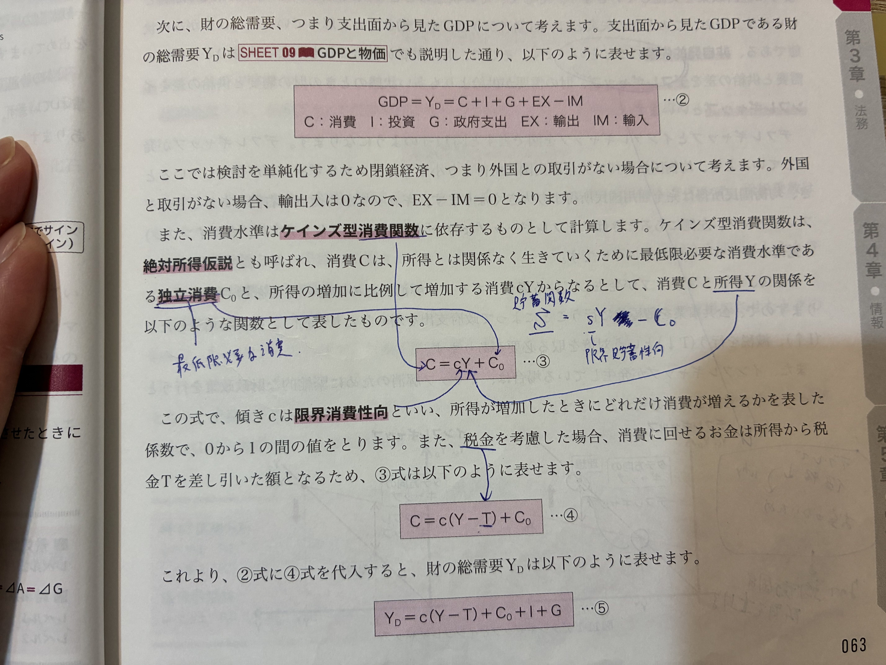
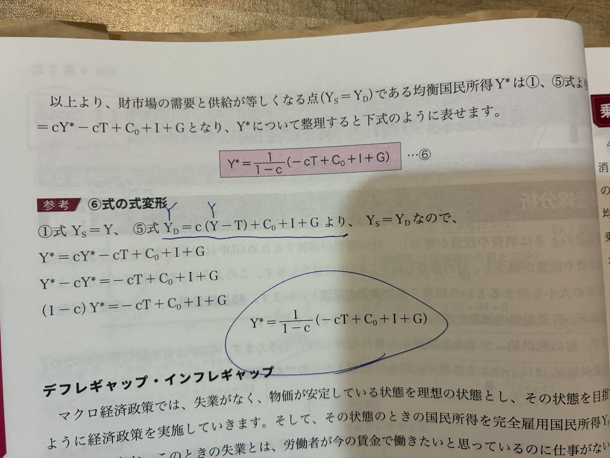
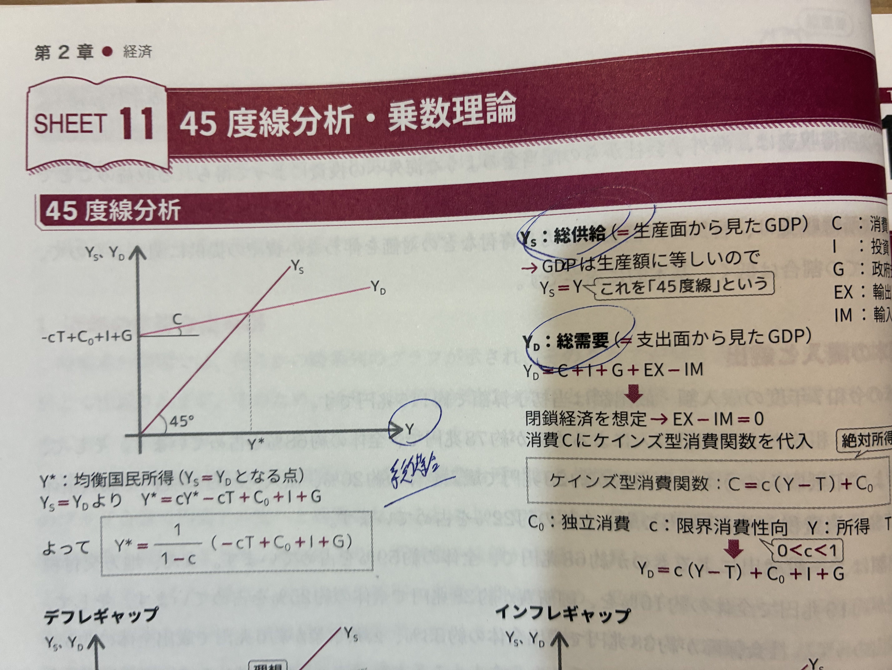
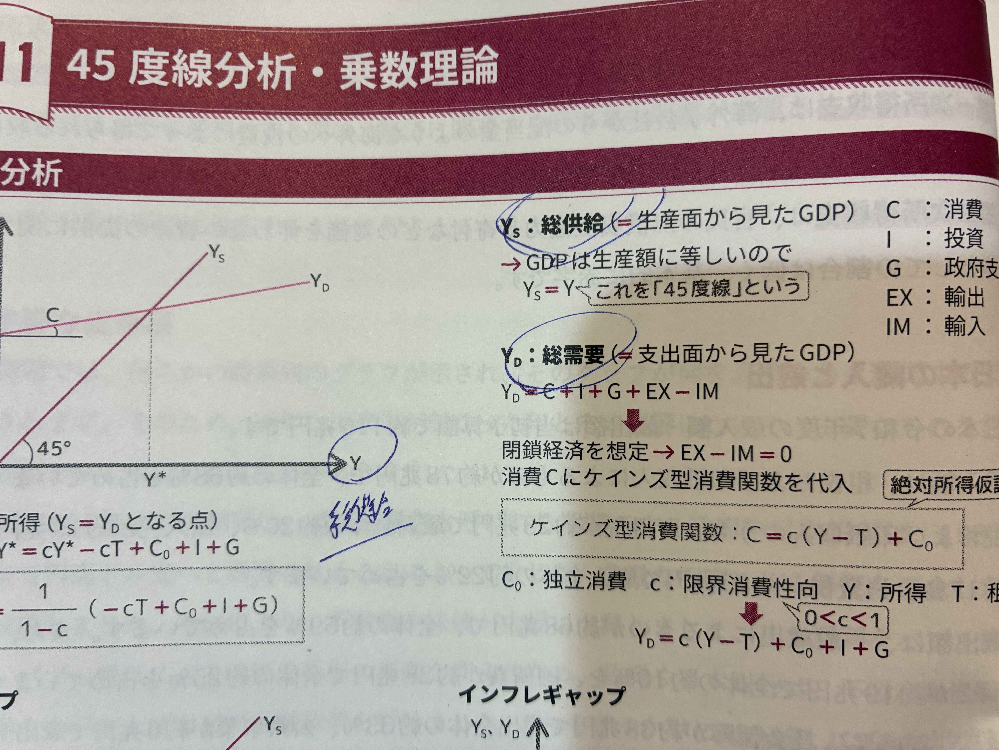

🐣 「国全体の所得はどこで決まる？」
🧒
学習者
不景気のとき、どうしたら景気がよくなるの？🧑🏫
先生
ケインズは「需要が足りないから景気が悪い」と考えた。需要を増やす（公共事業など）と、所得は 乗数倍 で増える。これが 45度線分析。🐣 つかみ
- 総供給 Y_S＝生産面から見たGDP（45度線そのもの）
- 総需要 Y_D＝C＋I＋G＋EX−IM
- 均衡：Y_S = Y_D の交点が均衡国民所得 Y*
🌱 ケインズ型消費関数
消費＝最低限の消費＋所得に比例する消費
C = c·Y + C₀
C₀＝独立消費（最低限必要な消費水準・絶対所得仮説）
c＝限界消費性向（0<c<1）
税金Tを考慮すると C = c(Y−T) + C₀（可処分所得（Y−T）に依存）
📊 ケインズ型消費関数の構造

📷 対応する手書きノート/教科書ページ：IMG_2421
📘 均衡国民所得 Y* の導出
閉鎖経済（EX-IM=0）の場合
- Y_D = c(Y−T) + C₀ + I + G
- 均衡：Y_S = Y_D ⇒ Y = c(Y−T) + C₀ + I + G
- 整理：(1−c)Y = -cT + C₀ + I + G
Y* = (1/(1−c)) · (-cT + C₀ + I + G)
1/(1−c)＝乗数
📘 各種乗数
| 政策 | 乗数 | 意味 |
|---|---|---|
| 政府支出 G が ΔG 増 | 1/(1−c) | 政府支出乗数 |
| 投資 I が ΔI 増 | 1/(1−c) | 投資乗数 |
| 租税 T が ΔT 増 | -c/(1−c) | 租税乗数（マイナス） |
| 減税 T が ΔT 減 | +c/(1−c) | 減税の効果 |
均衡予算乗数の定理：ΔG = ΔT のとき、所得の変化は ΔG と等しい（乗数1）。
📊 乗数効果の波及（c=0.8 の場合）

📷 対応する手書きノート/教科書ページ：IMG_2423
📖 乗数効果の仕組み
- 政府が10億円の公共事業 → 受注企業の従業員の所得が10億円増（①）
- その人達が 所得の80%（c=0.8） を消費 → 別の企業に8億円の収入（②）
- これが連鎖して 1+0.8+0.8²+... = 1/(1−0.8) = 5倍 に膨らむ
- これが 政府支出乗数 1/(1−c) の正体
📊 45度線分析（Y_S=Y_Dの均衡国民所得）

📷 対応する手書きノート/教科書ページ：IMG_2419
📖 45度線分析の読み方
- 黒の45度線：「総供給＝総生産＝Y」を表す（恒等式）
- 赤の Y_D 線：消費・投資・政府支出からなる総需要。傾き c（0<c<1）
- ⭐青丸：両線の交点＝均衡国民所得 Y*
- Y切片 = C₀+I+G−cT（独立支出の合計）：これが大きいほど Y* も大きくなる
📊 デフレギャップ：「タテ方向」の需要不足

📷 対応する手書きノート/教科書ページ：IMG_2424
📖 デフレギャップ vs インフレギャップの覚え方
- デフレ＝Y* が Y_F より左側（少ない）。Y_F での縦のギャップが 需要不足
- インフレ＝Y* が Y_F より右側（多い）。需要過剰で物価上昇圧力
- 暗記：「右でサイン（イン）」（右側にあるならインフレ）
🔍 デフレギャップとインフレギャップ
デフレギャップ
需要 Y_D が完全雇用国民所得 Y_F より少ない状態。
→ 失業発生（非自発的失業）
→ 政策：公共事業 G↑、減税 T↓、投資促進 I↑
インフレギャップ
需要 Y_D が完全雇用国民所得 Y_F より多い状態。
→ 物価上昇圧力
→ 政策：緊縮財政 G↓、増税 T↑
🔍 デフレギャップの覚え方
📌 「タテ方向のギャップ」
横軸が国民所得、縦軸が需要。デフレギャップは 縦方向 に測る（完全雇用所得Y_F での需要不足の高さ）。
左側にあるとき＝デフレ、右側にあるとき＝インフレ（覚え方：「右でサイン（イン）」）。
🔍 貯蓄関数
S = sY − C₀
限界貯蓄性向 s = 1−c（c＋s＝1）。
所得 Y のうち消費 C に回さない分が貯蓄 S。
✍️ ノートの青文字・手書きメモ
IMG_2419／2420：45度線分析の前提
教科書 SHEET11：45度線分析

教科書：Y_S=総供給／Y_D=総需要／均衡条件
- Y_S：総供給（生産面から見たGDP）→ これを「45度線」という
- Y_D = C + I + G + EX − IM（総需要）
- 絶対所得仮説：消費は所得の絶対水準に依存
- 0 < c < 1（限界消費性向）
IMG_2421／2422：ケインズ型消費関数
教科書：C = cY + C₀（限界消費性向 c、独立消費 C₀）／青「最低限必要な消費」
- 独立消費 C₀＝最低限必要な消費水準
- 限界消費性向 c：所得が増えたとき、何割を消費に回すか
- 貯蓄関数：S = sY − C₀（限界貯蓄性向 s = 1−c）
IMG_2423：均衡国民所得 Y* の式変形
教科書：Y_S=Y_D を解くと Y* = 1/(1−c) · (-cT + C₀ + I + G)
- ① Y_S = Y
- ② Y_D = c(Y−T) + C₀ + I + G
- 均衡：Y = cY − cT + C₀ + I + G
- (1−c)Y = -cT + C₀ + I + G
- Y* = (1/(1−c))(-cT + C₀ + I + G)
IMG_2424／2425：デフレギャップの本質
教科書：デフレギャップ／インフレギャップ ／ 青書込「デフレで価格↓ why お金がないため」

教科書：デフレ・インフレギャップの図解
- デフレで価格↓ → why → お金がないため → なので均衡国民所得を所得で上げる（明示的因果連鎖）
- 非自発的失業（青下線で重要マーク）
- デフレ対策：I↑（投資増）、G↑（公共事業）、T↓（減税）
- 「タテ方向のギャップ」（縦方向に測る重要メモ）
🔑 これだけは押さえる
- ケインズ型消費関数：C = c(Y−T) + C₀（c＝限界消費性向 0<c<1）
- 均衡国民所得：Y* = (1/(1−c))(-cT + C₀ + I + G)
- 政府支出乗数＝1/(1−c)、租税乗数＝-c/(1−c)
- 均衡予算乗数の定理：ΔG=ΔT のとき乗数1
- デフレギャップ：需要不足→公共投資・減税で対応
- 貯蓄関数：S = sY − C₀（s = 1−c）
✏️ 穴埋め演習
基礎
① ケインズ型消費関数：C = c(Y−T) + C₀
② c は 限界消費性向 で 0 < c < 1。
③ 政府支出乗数 = 1/(1−c)
④ 租税乗数 = -c/(1−c)
⑤ 需要不足で発生するギャップを デフレギャップ という。
⑥ 貯蓄関数：S = sY − C₀（s = 1−c）
❓ ミニクイズ
Q1
限界消費性向 c=0.8 のとき、政府支出乗数はいくらか。
1/(1-c)=1/(1-0.8)=1/0.2=5。政府支出を1兆円増やせば、所得は5兆円増える。
Q2
デフレギャップが発生しているときの財政政策として正しいのはどれか。
需要不足解消のため、政府支出増・減税で総需要を押し上げる。インフレギャップなら逆。
Q3
均衡予算乗数の定理によると、ΔG=ΔT=10兆円のとき所得Y*はいくら増えるか（c=0.8）。
ΔY = ΔG·1/(1-c) + ΔT·(-c/(1-c)) = 10·5 + 10·(-4) = 50-40 = 10。乗数1で増減。